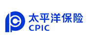
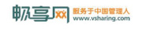
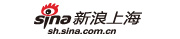
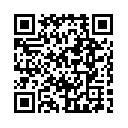

主办单位：
协办方：
战略媒体合作伙伴：
全程媒体伙伴：
独家网络合作媒体：
铂金赞助商：

社交酒会冠名赞助：
联合报告发布伙伴：
媒体支持：
  
SNTM 2012 论坛概况：
自Web 2.0的网络时代步入Web3.0的社交网络时代，这个时代新出现的"社交技术"正从根本上改变着人才管理的工作模式。从Web3.0到人才管理3.0，在社交网络技术与人才管理融合的过程中，机遇与挑战共同爆发，你和你的企业做好准备了吗？
2011年，LinkedIn成功在美国纽约交易所上市，在长期的发展过程中，LinkedIn体现出职业社交巨大的商业价值，其中不得不说的是，职业社交网络的出现弥补了中高端招聘渠道的巨大空白。但在中国，人力资源从业者对职业社交网络的知晓程度却不容乐观，虽然职业社交网络在中国已经大有星星燎原之势，但很多人仍处于较保守的状态，职业社交网络的优势被业内人士认知接受仍需时间。
而2011年又被誉为中国的"微博应用元年"，这一年中微博不但深深融入到人们的生活中，"微招聘"这一概念也迅速崛起。活跃度高，传播范围广，成本低廉等优势，使得微博成为人才猎取的又一主要阵地。

借助手机二维码识别软件，扫描活动链接地址并发送给身边的朋友
下载手机二维码识别软件
联系我们：
赞助及票务：
- 殷建东：
- Email: lion.yin@ushi-inc.com
手机:138 1787 7732
电话：(021)5175-9800 - 103 - 杜界熊：
- Email: jason.du@ushi-inc.com
手机:138 1650 8728
电话：(021) 5175 9800 – 129 - 欧阳泽林：
- Email: lynn.ou@ushi-inc.com
手机:187 2184 5484
电话：(021) 5175 9800 – 133
媒体及公关：
- 郁英霞：
- Email: judy.yu@ushi-inc.com
电话：(021) 5175 9800 – 105 - 马铖：
- Email: victoria.ma@ushi-inc.com
电话：(021) 5175 9800 – 106